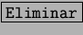
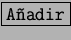

Otra de las funciones más importantes es la personalización del tipo de teclado que poseemos en nuestras computadoras, si no se posee un teclado Inglés, es necesario cargar el Centro de Control KDE3.2, entrar en la categoría Dispositivos de Entrada y seleccionar la opción Teclado Internacional como en la figura 3.3
Como se podrá ver, el mapa de caracteres por defecto que el KDE tiene
configurado inicialmente es para los teclados ingleses, si no se posee
un teclado de ese tipo, oprimir  y luego
, aparecerá un cuadro con una lista desplegable, donde
se puede seleccionar el mapa de caracteres para el teclado
adecuado. Con  los cambios tomarán efecto.
los cambios tomarán efecto.